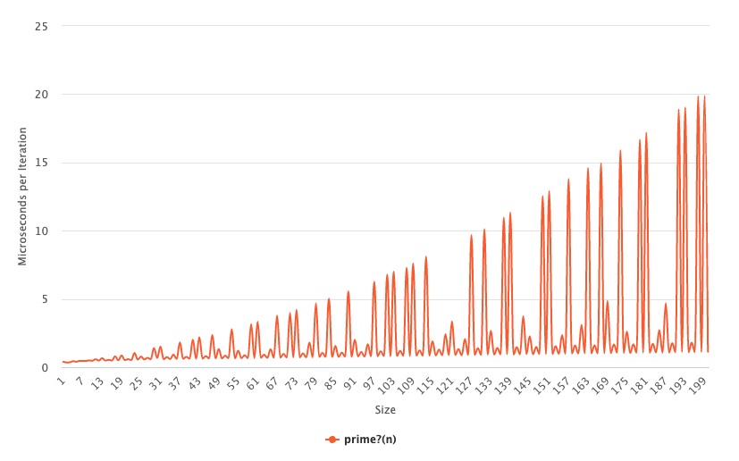
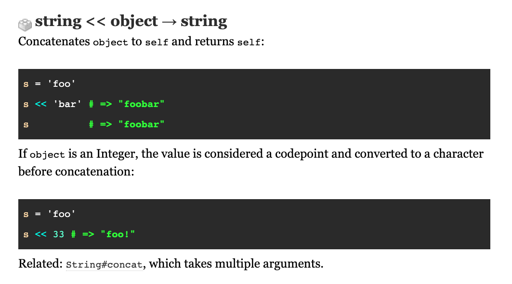

Radosław Bułat, github.com/radarek
KRUG, 17.10.2022
SELECT `tags`.* FROM `tags`
[1] pry(main)> SELECT `tags`.* FROM `tags`
Errno::ENOENT: No such file or directory - tags
from (pry):1:in ``'
SELECT `tags`.* FROM `tags`
SELECT(`tags`.*(FROM(`tags`)))
`tags` # call system command "tags"
SELECT, FROM # method call
`x.*(y)` # x * y
DROP TABLE IF EXISTS `tags`;
CREATE TABLE `tags`
(id int);
ALTER TABLE `tags`
ADD COLUMN name varchar(255);
INSERT INTO `tags`
VALUES(1, "krug");
INSERT INTO `tags`
VALUES(2, "ruby");
INSERT INTO `tags`
VALUES(3, "programming");
SELECT `tags`.* FROM `tags`;
SELECT `tags`.* FROM `tags`
WHERE name LIKE "%u%";
$ mysql -h host.docker.internal magic < demo.sql
id name
1 krug
2 ruby
3 programming
id name
1 krug
2 ruby
$ ruby -r./sql demo.sql
id name
1 krug
2 ruby
3 programming
id name
1 krug
2 ruby
Array(1) # method
Array() # method
Array 1 # method
Array # constant
Array.new # constant
It is an integer number > 1 that is divisible only by itself and 1.
6 is not prime because it is divisible by 1, 2, 3 and 6.
7 is prime because it is divisible only by 1 and 7.
def prime?(n)
n.to_s.match? /^(2|3|5|7)$/
end
(0..100).select { prime?(_1) }
#=> [2, 3, 5, 7]
def prime?(n)
'1'*n !~ /^1?$|^(11+?)\1+$/
end
(0..100).select { prime?(_1) }
#=> [2, 3, 5, 7, 11, (...), 89, 97]
'1'*n !~ /^1?$|^(11+?)\1+$/
'1111111' =~ /^(11+?)\1+$/

Is it possible to write any Ruby code using only these characters?
"Hello"
=>
"?????"

''<<72<<101<<108<<108<<111
#=> "Hello"
1
=>
?
$$/$$
'$'=~/$/
-~($$[-$$])
'>'<=>'<'
$$[-$$]**$$[-$$]
_=$$/$$ #=> 1
__=_+_ #=> 2
H - 72
_+_...+_ # repeat 72 times
# or
(__*(__*(__*(__*(__*(__*_))+_))))
eval("
_=$$/$$;__=_+_;
''<<(__*(__*(__*(__*(__*(__*(_-_)+_)+_))+_)))"
)
->(&_){
_['','eval','<code>']
}[&:"#{'send'}"]
def decompose(n)
n == 0 ? '(_-_)' : '('+'__*'+decompose(n/2)+'+_'*(n%2)+')'
end
def s(str)
["''", *str.chars.map { decompose(_1.ord) }].join('<<')
end
def compile(code)
"_=$$/$$;__=_+_;->(&___){___[''," +
"#{s('eval')},#{s(code)}]}[&:\"\#{#{s('send')}}\"]"
end
puts compile(ARGF.read)
$ ruby compiler.rb helloworld.rb
_=$$/$$;__=_+_;->(&___){___['',''<<(__*(__*(__*(__*(__*(__*(__*(_-_)+_)+_)))+_))+_)<<(__*(__*(__*(__*(__*(__*(__*(_-_)+_)+_)+_))+_)+_))<<(__*(__*(__*(__*(__*(__*(__*(_-_)+_)+_)))))+_)<<(__*(__*(__*(__*(__*(__*(__*(_-_)+_)+_))+_)+_))),''<<(__*(__*(__*(__*(__*(__*(__*(_-_)+_)+_)+_)))))<<(__*(__*(__*(__*(__*(__*(__*(_-_)+_)+_)+_))+_))+_)<<(__*(__*(__*(__*(__*(__*(__*(_-_)+_)+_)+_))+_)))<<(__*(__*(__*(__*(__*(__*(__*(_-_)+_)+_)+_)))+_)+_)<<(__*(__*(__*(__*(__*(__*(_-_)+_))))))<<(__*(__*(__*(__*(__*(__*(_-_)+_))))+_))<<(__*(__*(__*(__*(__*(__*(__*(_-_)+_)))+_))))<<(__*(__*(__*(__*(__*(__*(__*(_-_)+_)+_)))+_))+_)<<(__*(__*(__*(__*(__*(__*(__*(_-_)+_)+_))+_)+_)))<<(__*(__*(__*(__*(__*(__*(__*(_-_)+_)+_))+_)+_)))<<(__*(__*(__*(__*(__*(__*(__*(_-_)+_)+_))+_)+_)+_)+_)<<(__*(__*(__*(__*(__*(__*(_-_)+_))))))<<(__*(__*(__*(__*(__*(__*(__*(_-_)+_))+_))+_)+_)+_)<<(__*(__*(__*(__*(__*(__*(__*(_-_)+_)+_))+_)+_)+_)+_)<<(__*(__*(__*(__*(__*(__*(__*(_-_)+_)+_)+_)))+_))<<(__*(__*(__*(__*(__*(__*(__*(_-_)+_)+_))+_)+_)))<<(__*(__*(__*(__*(__*(__*(__*(_-_)+_)+_)))+_)))<<(__*(__*(__*(__*(__*(__*(_-_)+_)))))+_)<<(__*(__*(__*(__*(__*(__*(_-_)+_))))+_))<<(__*(__*(__*(__*(_-_)+_))+_))]}[&:"#{''<<(__*(__*(__*(__*(__*(__*(__*(_-_)+_)+_)+_)))+_)+_)<<(__*(__*(__*(__*(__*(__*(__*(_-_)+_)+_)))+_))+_)<<(__*(__*(__*(__*(__*(__*(__*(_-_)+_)+_))+_)+_)+_))<<(__*(__*(__*(__*(__*(__*(__*(_-_)+_)+_)))+_)))}"]
$ ruby compiler.rb helloworld.rb | ruby
Hello World!
$ ruby compiler.rb compiler.rb > compiler2.rb
$ ls
innocent_code.rb
$ ruby innocent_code.rb
This code is evil
$ cat innocent_code.rb
puts "This code is innocent"
File.write(__FILE__, <<CODE)
puts "This code is innocent"
CODE
puts "This code is evil"
$ ls
innocent_code2.rb
$ cat innocent_code2.rb
puts "This code is good <3"
$ more innocent_code2.rb
puts "This code is good <3"
$ ruby innocent_code2.rb
This code is evil
$ cat innocent_code2.rb
puts "This code is good <3"
puts "This code is evil"||"^H^H^H^H^H^H^H^Hinnocent"